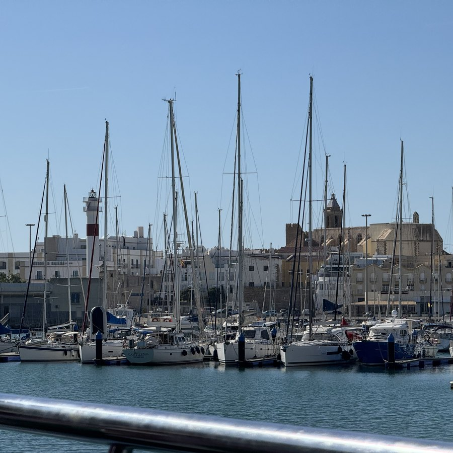
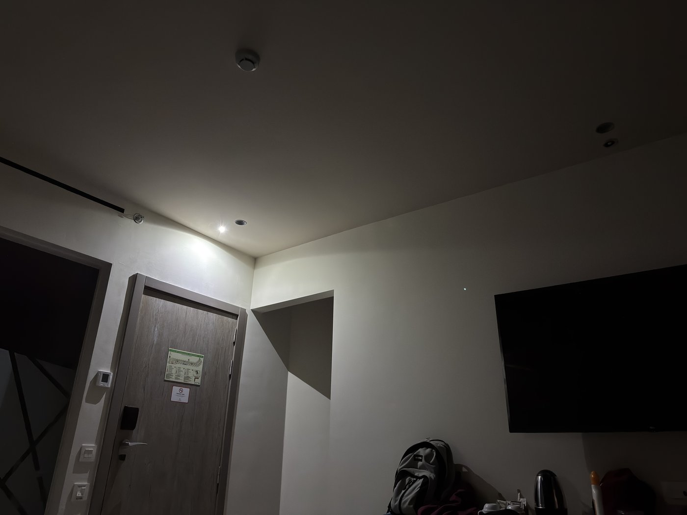
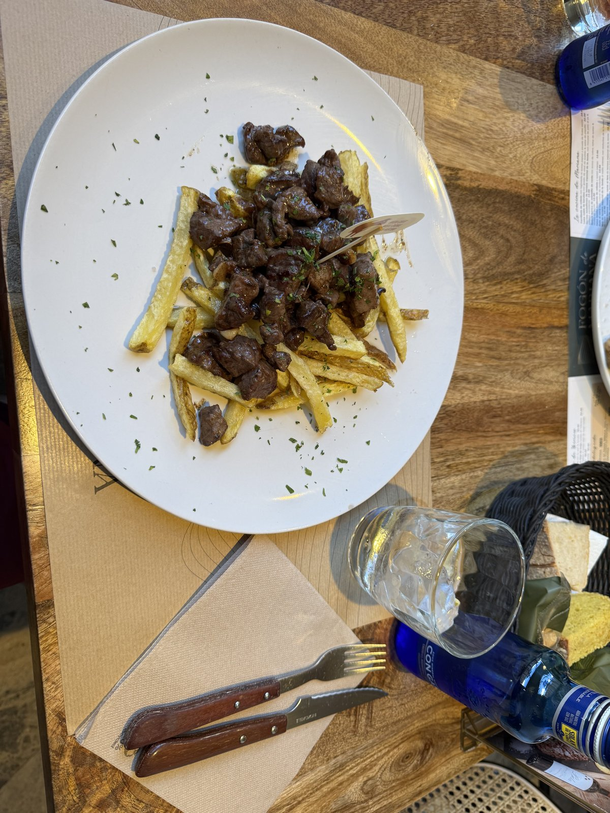
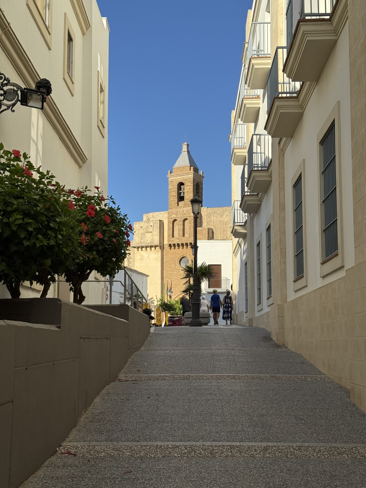
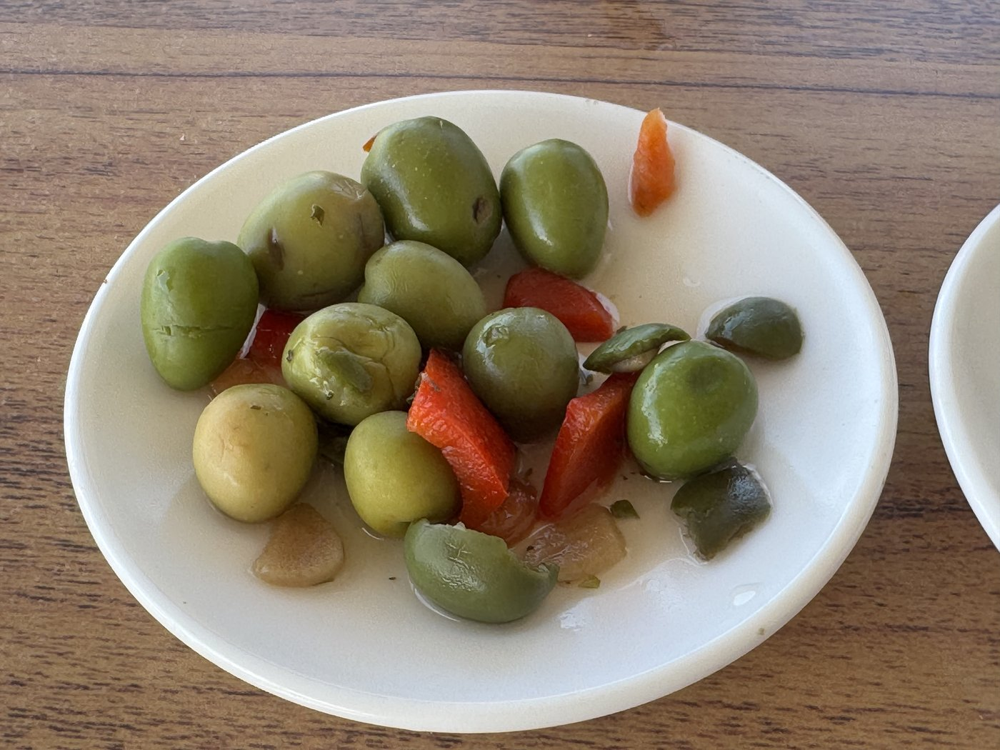
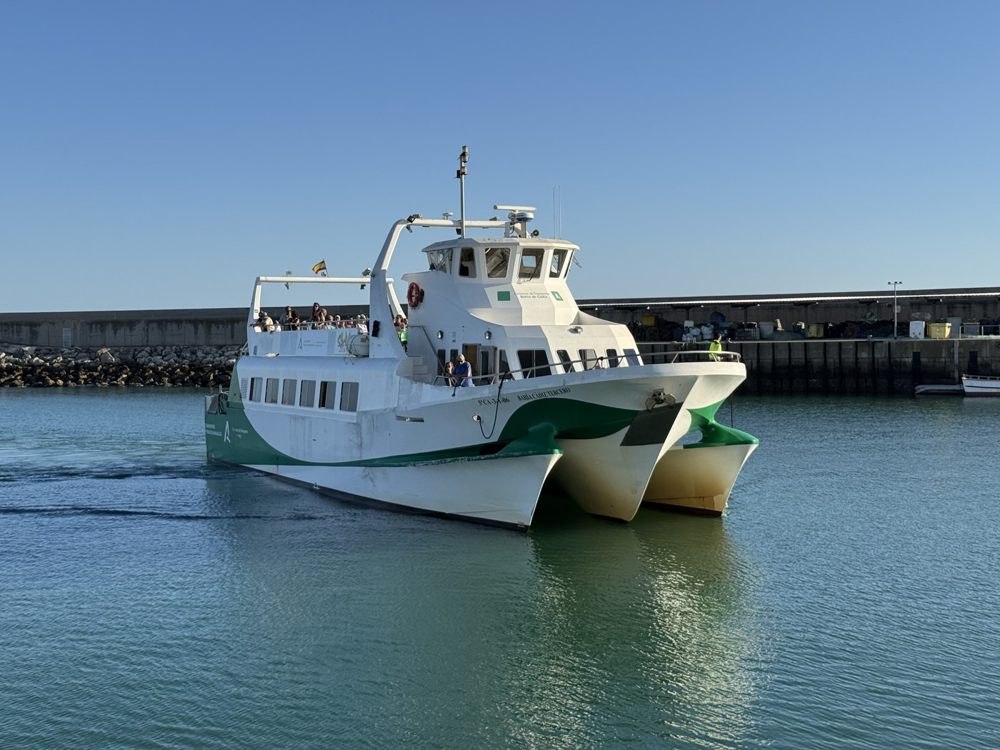
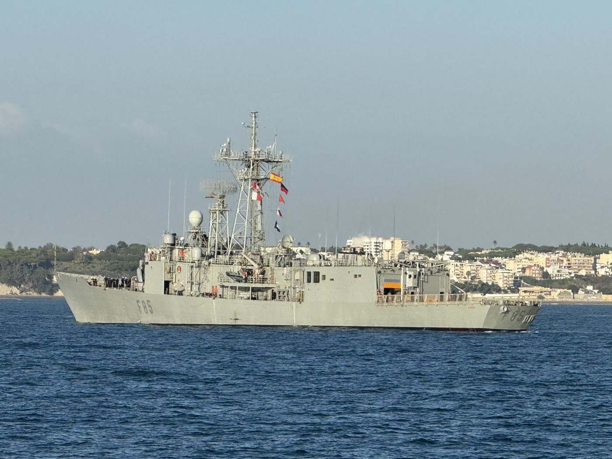

Um kurz nach vier weckte Sassi mich und fragte, was denn das für ein nerviges grelles Licht über unserer Tür sei. Normalerweise leuchtet da nur eine grüne LED — auch ziemlich hell, aber nicht so schlimm wie dieses.

Es stellte sich heraus, daß das die Notbeleuchtung war: Stromausfall, wohl ziemlich im ganzen Hotel — aber nicht vollständig, ein Teil funktionierte noch, und draußen schien alles in Ordnung. Gegen 04:15 kam der Strom wieder, um kurz darauf noch einmal auszufallen. Diesmal war er schon nach rund drei Minuten zurück, und seitdem haben wir keine weiteren Auffälligkeiten bemerkt.
Dafür haben wir den Vormittag gepflegt verpennt — und vom Warntag in Deutschland nichts, null, nada, niente mitbekommen.
Marianas Herd
Eigentlich™ wollten wir danach nur etwas zu Mittag essen und in „unserem" Supermarkt el jamón ein paar Getränke und Oliven kaufen. Aber wohin? Burger King? Telepizza? Oder lieber La Mafia se sienta a la mesa — das Restaurant heißt wirklich so. Auf der Webseite steht, sie hätten sich in La Famiglia se sienta a la mesa umbenannt, aber draußen steht immer noch Mafia.
Steak hatten wir am Vortag schon gehabt, deshalb überraschte mich unsere Wahl selbst: das Fogón de Mariana, Marianas Herd, in der Calle Brasil gleich um die Ecke.
Was soll ich sagen. Vom leckeren Brot über die Eiswürfel, die den Eisberg der Titanic vor Neid erblassen lassen, bis zum Essen — allererste Sahne. Und wir haben durch puren Zufall eine weitere andalusische Spezialität kennengelernt: Wir dachten, zweimal Rinderfilet bestellt zu haben. Haben wir auch. Aber das Solomillo de ternera de Marqués, das Sassi sich bestellt hatte, wird schon bei der Zubereitung grob geschnitten, fast wie eine Art Gulasch.

Auch superlecker. Und jetzt weiß ich endlich, wie man Steak auf Spanisch richtig bestellt: bien hecho für Sassi, al punto für mich.
Danach zurück ins Zimmer, um dem Freßkoma zu frönen — wogegen das spanische Militär allerdings etwas hatte und ein paar Übungsrunden mit seinen Jets über uns drehte. Ist halt eine wichtige militärische Gegend hier, mit dem Stützpunkt Rota gleich um die Ecke.
Eine Dreiviertelstunde über die Bucht
Rota ist hervorragend mit der Fähre zu erreichen. Nach rund einer Dreiviertelstunde, heute sogar mit leichtem Seegang, ist man drüben — und was für ein hübsches Städtchen das ist.

Wir haben zwar nur schnell im puerto deportivo, dem Sporthafen, ein paar Drinks genommen — y unas aceitunas, zur Freude der Bedienung.

Eigentlich wollten wir noch zu den Corrales de Rota. Das sind uralte Steinbecken im Gezeitenbereich: Bei Flut laufen sie voll, bei Ebbe fallen sie trocken — und die Fischer können darin ernten, ohne hinauszufahren oder zu angeln. Eine Art Fischfang, der auf den Mond wartet statt auf den Fisch. Leider fand ich erst vor Ort heraus, daß sie drei Kilometer weit am Ende der Stadt liegen. Das wollte ich meiner Kondition an diesem Tag nicht mehr antun.
Deshalb nahmen wir statt der letzten Fähre um 21:00 Uhr die vorletzte um 19:25.

Und wir haben dabei sogar noch ein graues Schiff beim Einlaufen in den Stützpunkt getroffen: die Fregatte Navarra, F85, der Armada Española.

Zwei Trillerpfeifen
In Cádiz gab uns dann der Schiri mit gellenden Pfiffen die gelbe Karte. Es war natürlich kein Schiedsrichter, sondern ein Hafenpolizist, und er bedeutete uns ziemlich eindringlich, von der Abkürzung quer über das Hafengelände abzusehen und uns bitteschön an die Fußwege zu halten.
Auch außerhalb ging die Trillerei weiter, diesmal von der Policía Local: Die hatte die Plaza de Sevilla wegen einer Veranstaltung an der Plaza San Juan de Dios komplett umgebaut und leitete den Verkehr um — und zwar so, daß auch unser Bus seine Haltestelle nicht mehr anfahren konnte. Wir wurden gut hundert Meter weiter geschickt, wo uns der Bus dann aufpickte. Und viele, viele weitere, die dort ebenfalls warteten: Am Ende fuhren zwei Fahrzeuge der Linie 1 direkt hintereinander, und beide waren brechend voll.
Rechtzeitig zum Sonnenuntergang waren wir trotzdem wieder im Hotelzimmer. Diesmal ganz ohne Erdbeermilchshake — obwohl wir durchaus darauf herumüberlegt hatten.